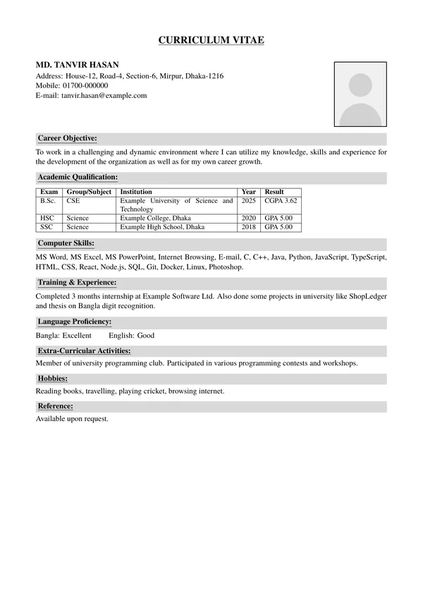

make cv
A CV that gets read যে সিভি পড়া হয়
I write and design clean, professional CVs in LaTeX for students, fresh graduates and people early in their careers. Clear structure, honest wording, and a layout that looks sharp on screen and on paper. শিক্ষার্থী, সদ্য গ্র্যাজুয়েট ও ক্যারিয়ারের শুরুতে থাকা সবার জন্য আমি LaTeX দিয়ে পরিষ্কার, প্রফেশনাল সিভি লিখি ও সাজাই। গোছানো কাঠামো, সৎ ভাষা, আর এমন লেআউট যা স্ক্রিনে ও প্রিন্টে দুই জায়গাতেই সুন্দর দেখায়।
CSE student in Dhaka. Every CV is written by me, not a template generator. ঢাকার একজন CSE শিক্ষার্থী। প্রতিটি সিভি আমি নিজে লিখি, কোনো টেমপ্লেট জেনারেটর দিয়ে নয়।
Your CV gets about 6 secondsআপনার সিভির হাতে মাত্র ৬ সেকেন্ড
Recruiters skim before they read. Eye-tracking studies found they spend about 6–7 seconds on a CV at first look, then decide whether to read the rest. A cluttered page loses that moment, however good the person behind it. রিক্রুটাররা আগে চোখ বোলান, তারপর পড়েন। আই-ট্র্যাকিং গবেষণায় দেখা গেছে, প্রথম দেখায় তাঁরা একটি সিভিতে গড়ে ৬–৭ সেকেন্ড সময় দেন, তারপর ঠিক করেন বাকিটা পড়বেন কি না। এলোমেলো সিভি সেই মুহূর্তটা হারায়, মানুষটা যত যোগ্যই হোক।
In those seconds, they look for:ওই কয়েক সেকেন্ডে তাঁরা খোঁজেন:
- who you are and the role you wantআপনি কে, আর কোন পদ চান
- your latest degree or jobআপনার সর্বশেষ ডিগ্রি বা চাকরি
- the skills that match the jobচাকরির সঙ্গে মেলে এমন দক্ষতা
- whether the page is easy to scanপাতাটায় সহজে চোখ বোলানো যায় কি না
Source: Ladders recruiter eye-tracking study (about 6 seconds in 2012, 7.4 seconds in the 2018 update). সূত্র: Ladders-এর রিক্রুটার আই-ট্র্যাকিং গবেষণা (২০১২ সালে প্রায় ৬ সেকেন্ড, ২০১৮ সালের আপডেটে ৭.৪ সেকেন্ড)।
Same person. Same details. Different CV.একই মানুষ, একই তথ্য, ভিন্ন সিভি।
Tanvir is fictional, but his “before” CV looks like hundreds sent out every day. Even this small, you can tell which one gets read. তানভীর কাল্পনিক, কিন্তু তার “আগের” সিভির মতো সিভি প্রতিদিন শত শত জমা পড়ে। এত ছোট আকারেও বোঝা যায়, কোনটা পড়া হবে।


-
A “career objective” that could belong to anyoneযে কারও হতে পারে এমন “ক্যারিয়ার অবজেক্টিভ”
A short profile: what he builds, and the role he wantsছোট একটি প্রোফাইল: সে কী বানাতে পারে, আর কোন পদ চায়
-
Internship and projects squeezed into one vague lineইন্টার্নশিপ আর প্রজেক্ট এক লাইনে, অস্পষ্টভাবে লেখা
Projects and internship up front, with what he built and the resultsপ্রজেক্ট ও ইন্টার্নশিপ সামনে, কী বানিয়েছে আর কী ফল পেয়েছে সহ
-
“Participated in various activities”, hobbies and “references on request” as filler“বিভিন্ন কার্যক্রমে অংশ নিয়েছি”, শখ আর “রেফারেন্স চাইলে দেওয়া হবে” দিয়ে জায়গা ভরানো
Club work written as what he actually did: ran Git and web workshopsক্লাবের কাজ লেখা হয়েছে আসলে যা করেছে সেভাবে: Git ও ওয়েব ওয়ার্কশপ পরিচালনা
-
One long list of skills, from MS Word to DockerMS Word থেকে Docker পর্যন্ত দক্ষতার একটা লম্বা তালিকা
Skills grouped, so the right ones stand outদক্ষতা ভাগ করে সাজানো, যাতে দরকারিগুলো চোখে পড়ে
-
Grey boxes, underlines and tables that job portals often read badlyধূসর বক্স, আন্ডারলাইন আর টেবিল, যা জব পোর্টাল প্রায়ই ঠিকমতো পড়তে পারে না
One clean layout, sharp on screen and on paperএকটাই পরিষ্কার লেআউট, স্ক্রিনে ও প্রিন্টে ঝকঝকে
Why get your CV made hereকেন এখানে সিভি বানাবেন
-
Written by a personএকজন মানুষের লেখা
I read your details and write for the jobs you’re applying to. No template generator, no copy-paste.আপনার তথ্য পড়ে, আপনি যে চাকরিতে আবেদন করছেন সেটা মাথায় রেখে লিখি। কোনো টেমপ্লেট জেনারেটর বা কপি-পেস্ট নয়।
-
Modern, professional designআধুনিক, প্রফেশনাল ডিজাইন
A clean, structured layout made in LaTeX, the typesetting used for research papers. Sharp on screen, crisp on paper.LaTeX দিয়ে তৈরি গোছানো, পরিষ্কার লেআউট, যে টাইপসেটিং দিয়ে গবেষণাপত্র তৈরি হয়। স্ক্রিনে ঝকঝকে, প্রিন্টেও নিখুঁত।
-
Works with job portalsজব পোর্টালেও চলে
Uploading to a portal or an applicant-tracking system? Ask for the ATS-friendly style: a plain structure that software reads correctly.পোর্টাল বা ATS-এ আপলোড করবেন? ATS-বান্ধব স্টাইল চেয়ে নিন: সহজ কাঠামো, যা সফটওয়্যার ঠিকমতো পড়তে পারে।
-
First draft in 1–2 days১–২ দিনে প্রথম খসড়া
Deadline coming up? You’ll have a draft to review within a day or two, often sooner.আবেদনের শেষ তারিখ কাছে? এক-দুই দিনের মধ্যেই খসড়া হাতে পাবেন, অনেক সময় আরও আগে।
-
Half now, half when it’s doneঅর্ধেক এখন, বাকিটা শেষে
Pay half to start and the rest after you get the final draft, by bKash or Nagad.শুরুতে অর্ধেক, ফাইনাল ড্রাফট পাওয়ার পর বাকি অর্ধেক। বিকাশ বা নগদে।
-
Yours to keepপুরোটাই আপনার
You get the PDF, plus the editable source file if you want it, so you can update it later.PDF তো পাবেনই, চাইলে এডিট করার সোর্স ফাইলও, যাতে পরে নিজেই আপডেট করতে পারেন।
Packages & pricesপ্যাকেজ ও দাম
-
CV polishসিভি পলিশ
৳500
You already have a CV. I rebuild it in a clean LaTeX layout, fix the wording, structure and mistakes, and make it read well. আপনার আগে থেকেই সিভি আছে। আমি সেটা পরিষ্কার LaTeX লেআউটে নতুন করে সাজাই, ভাষা, কাঠামো ও ভুল ঠিক করি।
-
Fresher CVফ্রেশার সিভি
৳1,000–1,200
Written from scratch from your details: education, projects, internships, skills. One round of changes included. আপনার তথ্য থেকে শুরু থেকে লেখা: পড়াশোনা, প্রজেক্ট, ইন্টার্নশিপ, দক্ষতা। একবার সংশোধন অন্তর্ভুক্ত।
-
CV + cover letter + LinkedInসিভি + কভার লেটার + লিংকডইন
৳1,500–2,000
The full set: a new CV, a cover letter you can adapt for each job, and tips to bring your LinkedIn profile in line. পুরো সেট: নতুন সিভি, প্রতিটি চাকরির জন্য বদলে নেওয়া যায় এমন কভার লেটার, আর লিংকডইন প্রোফাইল ঠিক করার পরামর্শ।
The price within a range depends on how much there is to write. You get a PDF, plus the editable source if you want it. কতটা লিখতে হবে তার ওপর দাম নির্ভর করে। আপনি PDF পাবেন, চাইলে এডিট করার মতো সোর্স ফাইলও।
Sample CVsনমুনা সিভি
Fictional people, real layouts. With or without a photo, black and white or in colour: pick a style, or ask for your own. কাল্পনিক মানুষ, আসল লেআউট। ছবিসহ বা ছবি ছাড়া, সাদাকালো বা রঙিন: পছন্দের স্টাইল বেছে নিন, অথবা নিজের মতো চান।


How it worksকীভাবে কাজ করে
-
messageমেসেজ
Tell me on WhatsApp what you need and what kind of job you're applying for.হোয়াটসঅ্যাপে জানান কী দরকার, আর কোন ধরনের চাকরির জন্য আবেদন করছেন।
-
your detailsআপনার তথ্য
Send your current CV if you have one, or your education, experience, projects and skills. A photo if you want one on the CV.থাকলে আপনার বর্তমান সিভি পাঠান, নাহলে পড়াশোনা, অভিজ্ঞতা, প্রজেক্ট ও দক্ষতার তথ্য। সিভিতে ছবি চাইলে একটি ছবি।
-
first draftপ্রথম খসড়া
Within 1–2 days, often faster. You read it and tell me what to change.১–২ দিনের মধ্যে, অনেক সময় আরও আগে। আপনি পড়ে জানাবেন কী বদলাতে হবে।
-
final PDFফাইনাল PDF
I make the changes and send the finished CV, ready to upload or print.পরিবর্তন করে তৈরি সিভি পাঠাই, আপলোড বা প্রিন্টের জন্য প্রস্তুত।
Payment: half to start, the other half after you get the final draft. By bKash or Nagad. পেমেন্ট: শুরুতে অর্ধেক, ফাইনাল ড্রাফট পাওয়ার পর বাকি অর্ধেক। বিকাশ বা নগদে।
Your privacyআপনার গোপনীয়তা
Your details are used only to make your CV. I don't share them, and I delete them after delivery unless you ask me to keep them for future updates. আপনার তথ্য শুধু আপনার সিভি তৈরিতেই ব্যবহার হয়। আমি কারও সাথে শেয়ার করি না, আর ডেলিভারির পর মুছে ফেলি, যদি না পরে আপডেটের জন্য রেখে দিতে বলেন।
Questionsসাধারণ প্রশ্ন
I’m a fresher with no job experience. Can you still make a good CV?আমি ফ্রেশার, চাকরির অভিজ্ঞতা নেই। তবুও কি ভালো সিভি হবে?
Yes, that’s exactly who this is for. Projects, your thesis, internships, club work, competitions and volunteering all count. I’ll help you find them and write them so they show what you can do.হ্যাঁ, এই সার্ভিস মূলত আপনাদের জন্যই। প্রজেক্ট, থিসিস, ইন্টার্নশিপ, ক্লাবের কাজ, প্রতিযোগিতা, স্বেচ্ছাসেবা, সবই কাজে লাগে। এগুলো খুঁজে বের করে এমনভাবে লিখব, যাতে বোঝা যায় আপনি কী পারেন।
What do I need to send?আমাকে কী কী পাঠাতে হবে?
Your current CV if you have one. If not, your education, projects, experience and skills, in any format, even a voice note. Also the job or circular you’re aiming for, and a photo if you want one on the CV.থাকলে আপনার বর্তমান সিভি। না থাকলে পড়াশোনা, প্রজেক্ট, অভিজ্ঞতা আর দক্ষতার তথ্য, যেভাবে সুবিধা, ভয়েস মেসেজেও চলবে। সঙ্গে যে চাকরি বা সার্কুলারের জন্য আবেদন করবেন সেটা, আর সিভিতে ছবি চাইলে একটি ছবি।
Should my CV have a photo?সিভিতে কি ছবি দেওয়া উচিত?
It depends on where you apply. Many local employers expect one; international applications and online portals usually work better without. I’ll suggest what fits, and you decide.কোথায় আবেদন করছেন তার ওপর নির্ভর করে। দেশের অনেক প্রতিষ্ঠান ছবি আশা করে, আবার বিদেশে আবেদন বা অনলাইন পোর্টালে সাধারণত ছবি ছাড়াই ভালো। কোনটা মানাবে আমি পরামর্শ দেব, সিদ্ধান্ত আপনার।
Will it work on job sites and company portals?জব সাইট বা কোম্পানির পোর্টালে কি চলবে?
Yes. You get a PDF that uploads anywhere. For portals that read your CV automatically, choose the ATS-friendly style. Some sites also ask you to fill in a profile form; you can copy the text straight from your CV.হ্যাঁ। আপনি PDF পাবেন, যেকোনো জায়গায় আপলোড করা যায়। যেসব পোর্টাল সিভি নিজে থেকে পড়ে নেয়, সেখানে ATS-বান্ধব স্টাইল নিন। কিছু সাইটে আলাদা প্রোফাইল ফর্মও পূরণ করতে হয়, সেখানে সিভি থেকে সরাসরি লেখা কপি করে নিতে পারবেন।
Can I ask for changes?পরিবর্তন চাইতে পারব?
Yes. You read the first draft and tell me what to change before anything is final. You pay the second half only after you get the final draft.অবশ্যই। প্রথম খসড়া পড়ে জানাবেন কী বদলাতে হবে, তারপরই ফাইনাল হবে। ফাইনাল ড্রাফট হাতে পাওয়ার পরই বাকি অর্ধেক টাকা দেবেন।
Can I edit it myself later? Do I get a Word file?পরে কি নিজে এডিট করতে পারব? Word ফাইল পাব?
You get a PDF, and the editable LaTeX source if you want it. You can open it for free in Overleaf, an online editor, or message me when you need an update. If an employer specifically asks for a Word file, tell me before we start.আপনি PDF পাবেন, চাইলে এডিট করার মতো LaTeX সোর্স ফাইলও। সেটা অনলাইন এডিটর Overleaf-এ বিনামূল্যে খোলা যায়, অথবা আপডেট দরকার হলে আমাকে মেসেজ দিন। কোনো প্রতিষ্ঠান যদি নির্দিষ্টভাবে Word ফাইল চায়, কাজ শুরুর আগেই জানাবেন।
My deadline is close. Can you do it quickly?আবেদনের শেষ তারিখ কাছে। তাড়াতাড়ি করা যাবে?
Tell me your deadline when you message. First drafts usually take 1–2 days, often less, and I’ll tell you honestly if I can make it in time.মেসেজ দেওয়ার সময়ই শেষ তারিখটা জানান। প্রথম খসড়া সাধারণত ১–২ দিনে হয়, অনেক সময় আরও কম। সময়মতো দিতে পারব কি না, সেটা আমি সোজাসুজি জানিয়ে দেব।
Ready when you are শুরু করতে প্রস্তুত
Message me on WhatsAppহোয়াটসঅ্যাপে মেসেজ দিন+880 1710-361756